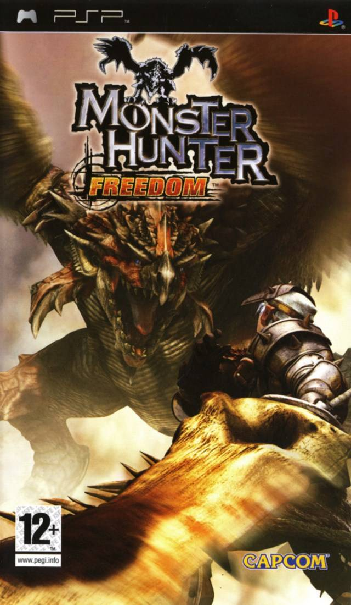

<!DOCTYPE html>
<html>
    <title>Monster Hunter Freedom</title>
    <link rel="stylesheet" href="../style.css">
    <link rel="icon" href="../gameImages/mh1Logo.png">
</html>
<body>
    <div>
        <button type="button" onclick="window.location.href = '../index.html';">BACK</button>
    <h1>Monster Hunter Freedom</h1>
    <p>Monster Hunter Freedom or Monster Hunter Protable (Japan) was the first game for the PSP. It is based on the Monster Hunter G content but is not a direct port of the game.</p>
    
    <table>
        <tr>
            <td>Release Dates</td>
            <td>
                <ul>
                    <li>Japan - 1st December 2005</li>
                    <li>Europe - 12th May 2006</li>
                    <li>North America - 23rd May 2006</li>
                    <li>Australia - 26th May 2006</li>
                    <li>Korea - 21st September 2006</li>
                </ul>
            </td>
        </tr>
        <tr>
            <td>Flagship Monster</td>
            <td>Rathalos</td>
        </tr>
    </table>    
</div>
<footer>
    
    <p>I'm Lukas and am a huge Monster Huner fan and that's why I made my wiki about the game.</p>
</footer>
</body>